Profitez de Kyoto pour faire des belles excursions. Il y a plus de 1600 temples, vous avez de quoi faire. Regalez vous des specialites culinaires.
Montez dans la tour de Kyoto pour avoir une vue 360 degres sur Kyoto.
Niveau nourriture:
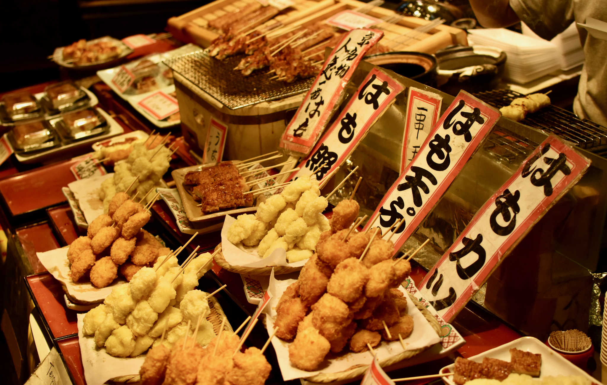
Ancienne capitale, Kyoto a su garder neanmoins de bonnees choses comme la boulangerie Kiki, difficile a trouve mais en vos le detours avec ces.. particularites -niveau food-
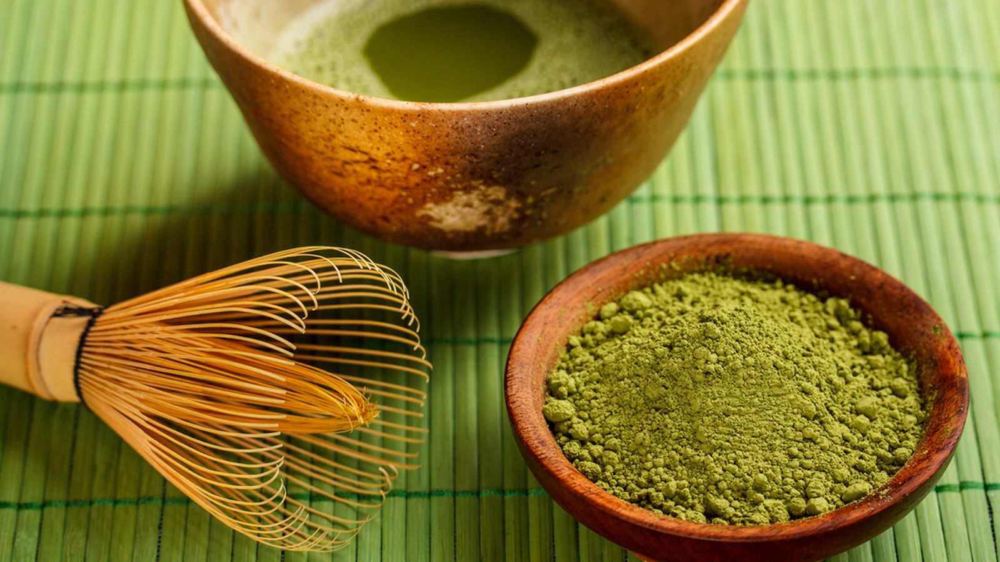
Les desserts et thes au Matcha. Bon c'est particulier mais c'est a tester.
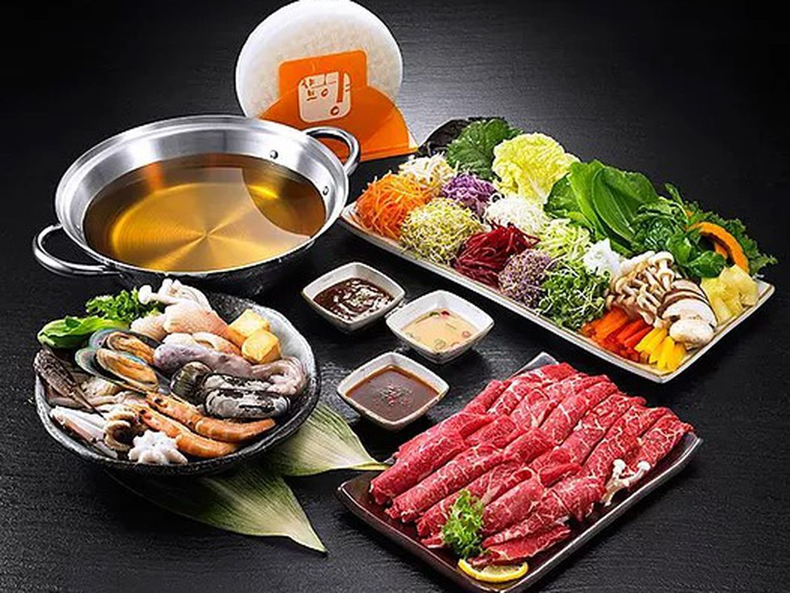
Les Shabu Shabu et Kyo Kaiseki sont des repas traditionnels si bien presentes et si bons. Un vrai regal pour les amoureux de la viande.
Laissez moi vous parler des Tempura, cette friture legere, peu asaisonnee, je ne sais comment la decrire. Goutez, le plaisir gustatif est incomensurable. Toute nourriture frit de la sorte est bonne, c'est de l'art culinaire.
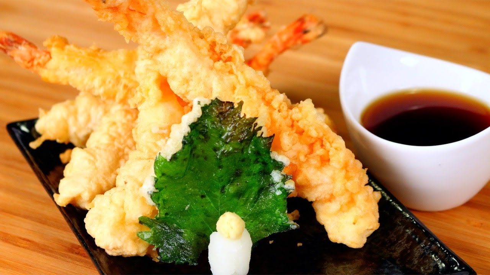
Il y a egalement, Les okonomiyaki (galette de choux); Le boeuf Wagyu (assez gras); Unagi (anguille), specialite japonaise depuis des decennie, est cuisinee sous toute forme.
oden, le pot au feu japonais, compose d'algue, tofu, oeuf...
Activites
Keep calm, stay Cool
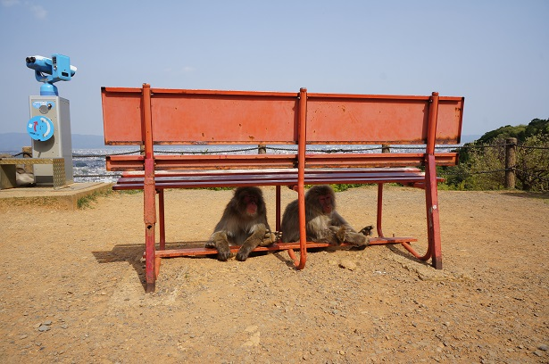
A cote de Arashiyama, le parc Iwatayama habrite une dizaine de singes dans leur habitat naturel, la montagne. Plus vous vous approchez de sommet, plus il y aura des singes. Attention, ils peuvent se montrer agressif donc ne les derangez pas et ne les regardez pas dans les yeux.
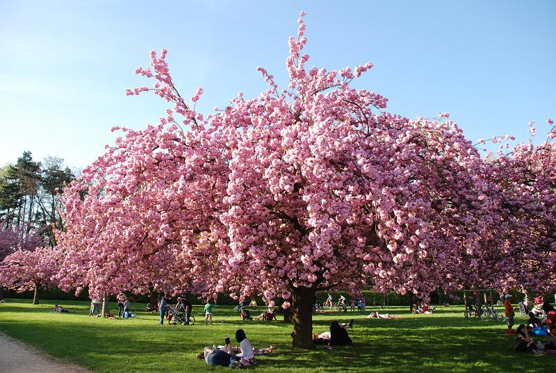
Seulement pendant la saison de floraison des cerisiers, le chemin des philosophes ou Tetsugaku No Michi, est en bel endroit pour admirer le paysage.
Le festival du Gion Matsuri en Juin, Profitez du marche de Nishiki ou le musee international du Manga pour nos Fan. A l'occasion, prenez un billet de bus a arrets multiples pour visiter un maximum de chose.
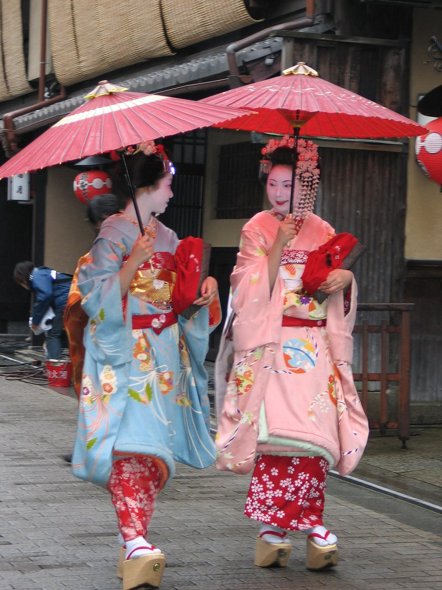
Comme cite precedemment, le quartier des geishas, Gion. Vous pouvez y voir de nombreuses Machiya -maisons traditionnelles utilisees pour le commerce-
Quartier celebre notament pour le festival estival Gion Matsuri.
Il y a trois allees principales: -Shirakawa, le long du canal avec des jolies ponts. -Hanamikoji, la plus connue grace a l'architecture typique et le temple Kenninji. -Pontocho, tres jolie avec de bons restaurants.
Le quartier et ses composants sont interdit aux photos -tres souvent comme ca-
Nature peinture
Moments verts
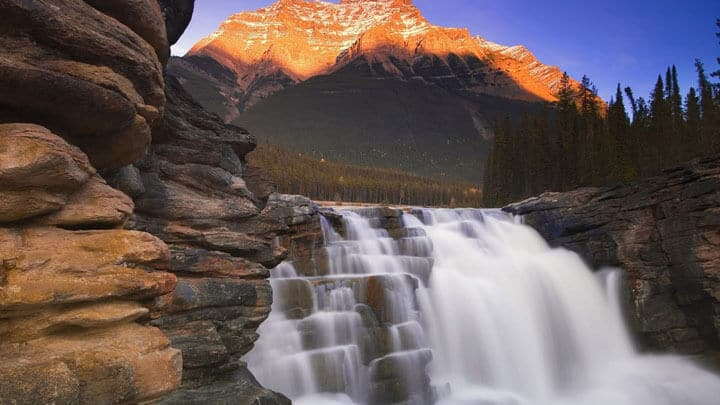
Arashiyama est un quartier nature de Kyoto. Vue magnifique sur les chutes, des couleurs incroyables en automne. Des balades en bateau et des balades en pousse-pousse pour profiter des paysage. En fin de journee, une ambiance typique et joyeuse vous acceuille.
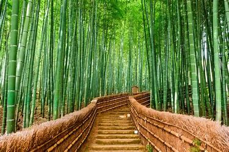
Egalement connu pour un des plus beaux endroits du monde, la Bambouseraie d'Arashiyama. Ces magnifiques bambous a cote des chutes permet une immersion totale dans la nature. N'y aller pas quand il pleut, ca gache la beaute du decor.. C'est beaucoup mieux quand le soleil glisse entre ses immenses arbres, l'air frais, l'ambiance.. Must Do
Profitez en pour visiter le parc national de Kyoto ou d'autres pour admirer les merveilles de la nature et le talent des japonais en jardinage.
Monuments
Temples:
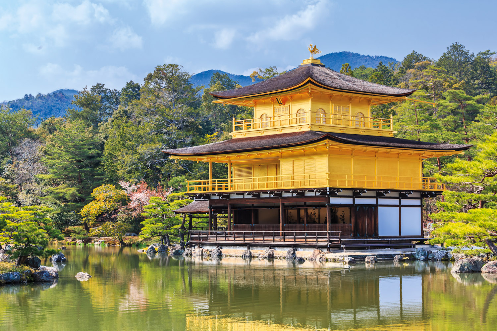
Il y a tellement de temples magnifiques la liste est encore longue. Mais en voici quelques uns :
Le Pavillon d'or, Kinkakuji est extremement frequente par les touristes pour cause, il est recouvert de feuille d'or et a une magnifique architecture. Le temple et le jardin sont magnifiques et merite votre attention. Be careful, il est normalement interdit de prendre des photos et interdit de visiter l'interieur malheuresement. C'est dailleurs comme ca dans la plupart des temples.
Ginkakuji, le Pavillon d'argent, le rival du Pavillon d'or. Il a ete construit pour couvrir le pavillon a cause de son image bling-bling boude par japonais. Aussi entoure par un jardin magnifique.
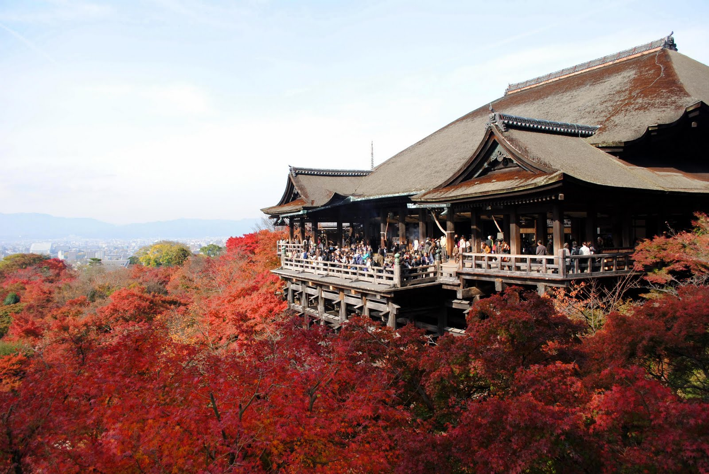
Kyomizu dera, pour y aller, traversez l'un des plus beaux endroits: les ruelles de Gion. Accedez, voyez... les fontaines, la vue, la vegetation.
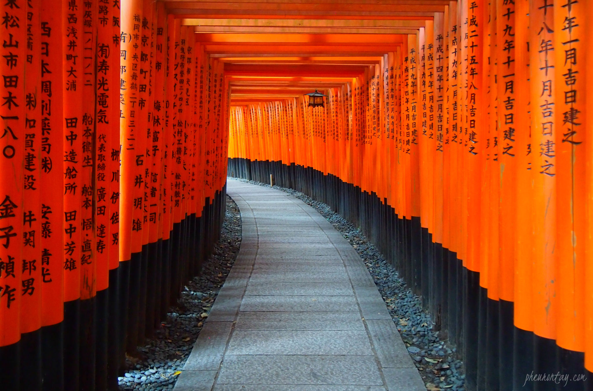
Fushimi-inari: Temple aux 1000 toris. C'est impressionnant, toutes ces portes, l'ambiance qui y reigne. Donnez vous comme objectif de monter tout en haut pour profiter de la belle vue et avoir mal aux jambes. Vous passerez a travers les portes et prendrez, je l'espere de belles photos. -Must Do-
 Ginkakuji, le Pavillon d'argent, le rival du Pavillon d'or. Il a ete construit pour couvrir le pavillon a cause de son image bling-bling boude par japonais. Aussi entoure par un jardin magnifique.
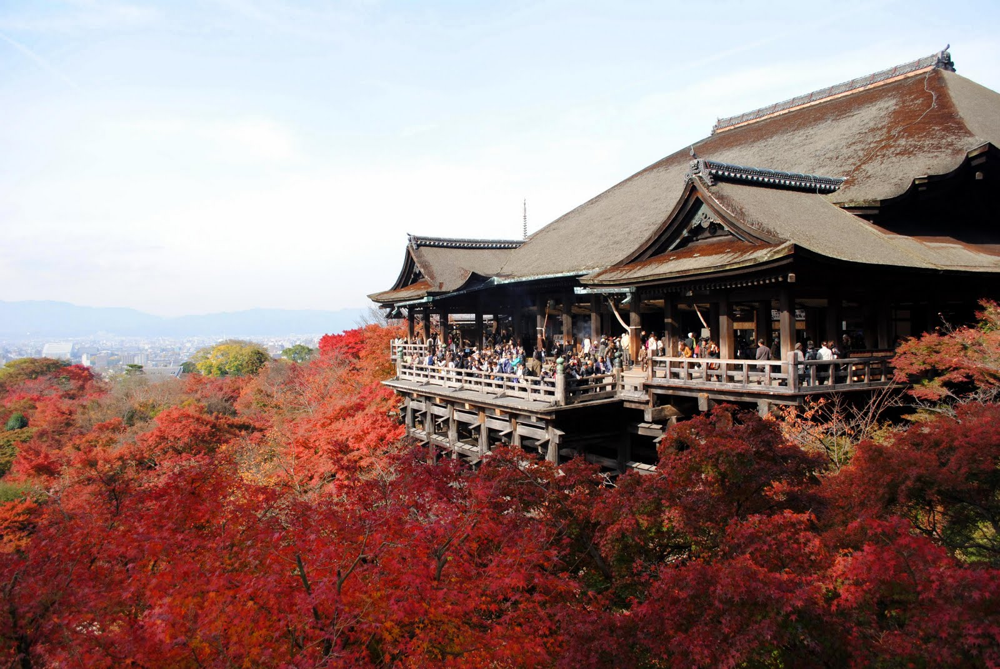
Kyomizu dera, pour y aller, traversez l'un des plus beaux endroits: les ruelles de Gion. Accedez, voyez... les fontaines, la vue, la vegetation.
Ginkakuji, le Pavillon d'argent, le rival du Pavillon d'or. Il a ete construit pour couvrir le pavillon a cause de son image bling-bling boude par japonais. Aussi entoure par un jardin magnifique.
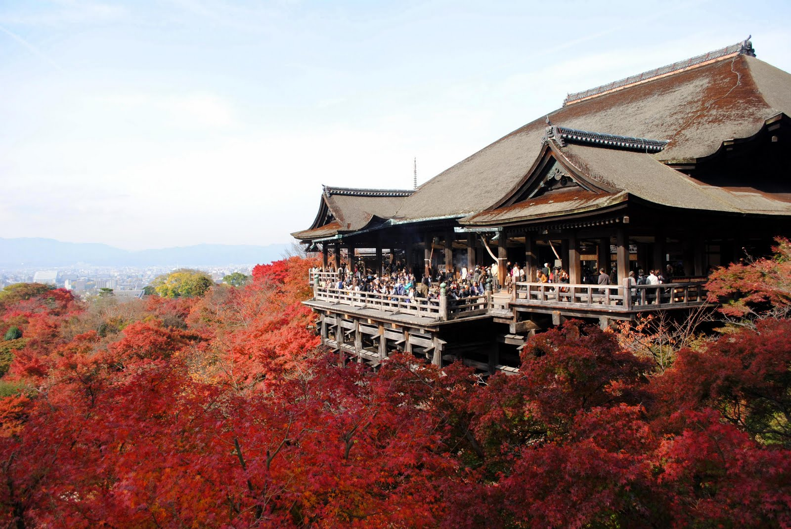
Kyomizu dera, pour y aller, traversez l'un des plus beaux endroits: les ruelles de Gion. Accedez, voyez... les fontaines, la vue, la vegetation.